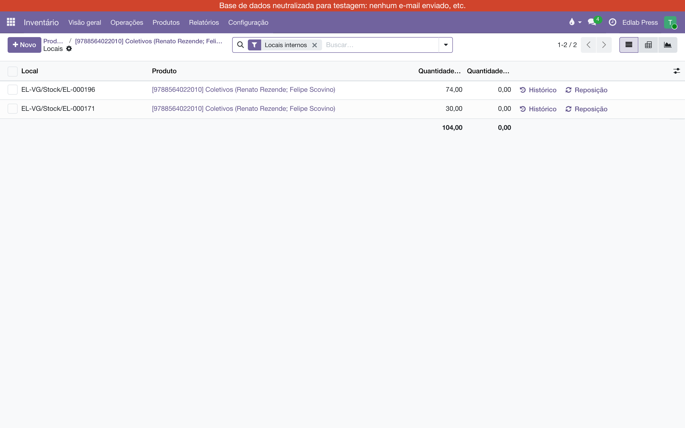
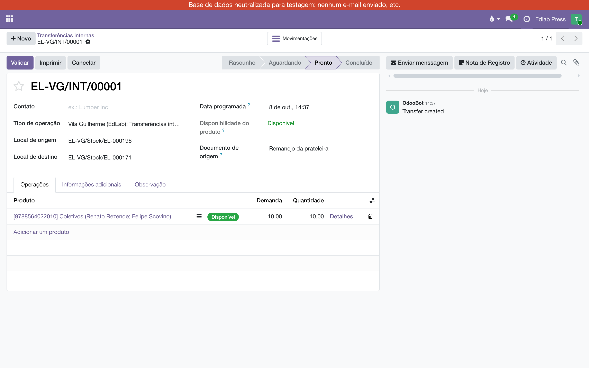

Prateleiras e transferências internas
O depósito é endereçado: cada livro tem a sua prateleira, e o sistema sabe qual. Este manual mostra onde a prateleira aparece, como mover livros de uma prateleira para outra — um título por vez, ou várias linhas de uma só vez — e o erro mais fácil de cometer no caminho.
O que é uma prateleira?
É um local do Inventário, filho do estoque do armazém. O estoque da Edlab é EL-VG/Stock; a prateleira 196 é EL-VG/Stock/EL-000196. Na n-1 o prefixo é N1-. O número tem zeros à esquerda de propósito: em ordem alfabética ele já é a ordem do passeio de quem separa.

Onde vejo em que prateleira está um livro?
Na ficha do livro, o botão Em mãos abre a lista por Local: uma linha por prateleira, com a quantidade de cada uma.

Outros dois lugares mostram a mesma coisa de outro ângulo:
| Tela | Para quê |
|---|---|
| Todas as linhas de estoque, com a coluna Local. Filtre por Local para ver o que há numa prateleira, ou agrupe por produto para ver em quantas prateleiras um título está. | |
| A lista das prateleiras (só para o administrador do Inventário). Na ficha de cada uma, o botão Produtos abre o que está lá. |
Como movo livros de uma prateleira para outra?
Com uma transferência interna. É um movimento como os outros, só que de um local do armazém para outro local do mesmo armazém — e fica no histórico do livro como qualquer entrega.
- Abra e clique em Novo.
- Em Local de origem, escolha a prateleira de onde sai — digite o código (EL-000196) e escolha na lista. Em Local de destino, a prateleira para onde vai.
- Na aba , adicione o livro e a quantidade.
- Clique em Validar. A lista Em mãos do livro muda na hora: menos na origem, mais no destino.

Se a prateleira de origem tem menos do que você pediu, a transferência fica em Aguardando e o botão Validar oferece mover o que há. Não há como tirar de uma prateleira o que não está nela.
Como movo várias linhas de uma vez?
Com Realocar, que é do administrador do Inventário. Serve para esvaziar uma prateleira, juntar um título que se espalhou, ou endereçar de uma vez o que está na raiz.
- Abra e filtre pelo Local ou pelo produto.
- Marque as linhas que vão mudar de lugar.
- Em , clique em Realocar; escolha o Local de destino e escreva o motivo.
- Confirmar. Cada linha vira um movimento validado, com o motivo no histórico.

Onde acompanho as transferências internas?
No painel , o cartão Transferências internas conta o que está a processar, ao lado dos Recebimentos e das Entregas. Clique no botão para abrir a fila.

Como endereço o que ainda está na raiz?
Parte do estoque veio da migração sem prateleira, parado em EL-VG/Stock. O jeito seguro é Realocar: no , filtre Local = EL-VG/Stock (a raiz exata, sem as filhas), marque as linhas e mande para a prateleira certa. A realocação parte da linha marcada, então sai mesmo da raiz.
Quem pode o quê
| Perfil | Vê a prateleira | Transferência interna | Realocar | Cadastra prateleira |
|---|---|---|---|---|
| Logística, Assistente | sim | sim | — | — |
| Logística, Gerente e Direção | sim | sim | sim | sim |
| Comercial, Gerente | sim | sim | — | — |
| Demais usuários internos | sim, onde já liam estoque | — | — | — |
Quando algo não sai como esperado
| O que aparece | Por quê | O que fazer |
|---|---|---|
| "Nada se move: … sai de EL-000043 e volta para EL-000043" | A origem ficou na raiz EL-VG/Stock, e a reserva caiu na própria prateleira de destino. O Odoo recusou validar. | Troque o Local de origem pela prateleira de onde o livro sai e valide de novo. Se o livro está mesmo na raiz, abra Detalhes e escolha em Separar de a linha da raiz. |
| "… não é prateleira de Vila Guilherme" | A origem ou o destino é um local de fora do armazém — uma prateleira de consignação, por exemplo. | Transferência interna é entre prateleiras do armazém. Para a prateleira do cliente, o caminho é o Pedido C. |
| Realocar não está no menu Ações | Só o administrador do Inventário realoca. | Use a transferência interna, ou peça ao gerente da Logística. |
| A transferência não mostra Local de origem nem Local de destino | O ajuste "Locais de armazenamento" está desligado nessa base — foi assim que ela chegou da migração. | É o que este módulo liga. Fale com a administração do sistema. |
| A transferência fica em Aguardando | A prateleira de origem tem menos do que a linha pede. | Confira o Em mãos do livro: ou a quantidade está errada, ou a prateleira. |
O que não fazer
- Não mude de prateleira pelo Ajuste de inventário (a coluna Contado). Isso grava uma perda numa prateleira e um achado na outra — dois ajustes, sem a transferência que explica. Mover é transferência interna ou Realocar.
- Não deixe a raiz na origem de uma transferência entre prateleiras. Veja a armadilha da raiz.
- Não tente levar livro à prateleira de um cliente por transferência interna. O sistema não oferece e não aceita: é o Pedido C que faz isso, com remessa e acerto.
- Não crie prateleira fora do padrão. O nome é o código com seis dígitos (EL-000414), e o local principal é o estoque do armazém. Fora disso a ordem do passeio quebra.